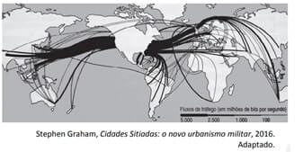
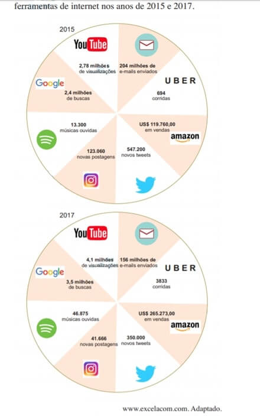

Conteúdo: Redes; Fluxos internacionais: pessoas, informações, dinheiro, mercadorias; Globalização.
Objetivo: Entender as relações entre os principais fluxos na era da globalização e seu papel na construção do espaço geográfico atual.
Questão 01
(FUVEST 2020) É de grande relevância aqui o fato de que uma grande proporção do trânsito de internet do mundo passa pelos Estados Unidos (...). Isso significa que a NSA (a agência de segurança nacional dos EUA) poderia acessar uma quantidade alarmante de ligações telefônicas simplesmente escolhendo as instalações certas. O que é ainda mais inacreditável:

Essas instalações não passam de alguns prédios, conhecidos como “hotéis de telecomunicação”, que hospedam os principais centros de conexão de internet e telefonia do planeta todo.
A respeito da configuração espacial e geopolítica retratada no excerto e no mapa, é possível afirmar que
a) essa é a razão do grande déficit econômico dos Estados Unidos atualmente, uma vez que a maior parte dos negócios e transações é feita pela internet.
b) essa situação explica o fato de que os Estados Unidos tenham, atualmente, a maior dívida pública do planeta, já que os custos com o tratamento de dados são muito altos.
c) em um mundo cada vez mais dependente dos fluxos imateriais de informação, a presença de objetos técnicos fixos torna‐se irrelevante para a posição geopolítica dos Estados Unidos.
d) o mapa representa, por meio do “trânsito de internet” e do fluxo de “ligações telefônicas”, uma globalização que integrou completamente tanto os norte‐americanos quanto as populações da África.
e) a presença de fixos, como algumas instalações de armazenagem e conexão, influencia a orientação de fluxos e dá aos EUA uma posição de destaque no contexto geopolítico.
Comentário:
a) Incorreta. A razão para o grande déficit econômico dos Estados Unidos atualmente deve-se ao déficit na balança comercial - diferença entre o volume de exportações e importações de um país -, e não porque a maior parte dos negócios e transações são feitas pela internet.
b) Incorreta. Os Estados Unidos têm a maior dívida pública do planeta porque o governo gasta mais do que arrecada, e não por causa dos custos relacionados ao tratamento dos dados.
c) Incorreta. Como se pode observar no enunciado da questão, o controle dos dados da internet passa por alguns prédios bem específicos, conhecidos como "hotéis de telecomunicação" que são os objetos técnicos fixos, portanto muito relevantes para a posição geopolítica dos Estados Unidos.
d) Incorreta. Como mostrado no mapa, a globalização não integrou completamente as populações da África, continente marcado pela exclusão em relação a grandes fluxos informacionais e por graves problemas econômicos, sociais e geopolíticos.
e) Correta. A presença de fixos (hotéis de telecomunicação) e instalações de armazenagem e conexão orienta os fluxos (linhas de tráfego no mapa) dá aos Estados Unidos uma posição de destaque no contexto geopolítico, uma vez que o país controla a maior parte do trânsito de informações no mundo via internet.
Questão 02
(2020) A organização do espaço geográfico por meio de redes eliminou a necessidade de fixar as atividades econômicas em um determinado lugar. Isso vale para o grande número de serviços, que podem ser prestados a partir de qualquer lugar do mundo para qualquer outro, bastando que esses locais estejam conectados.
(LUCCI, E. A. et. al. Território e sociedade no mundo globalizado: Geografia Geral e do Brasil. Ensino Médio. Editora Saraiva, 2005. p.127).
A formação das redes geográficas na contemporaneidade, conforme indicado pelo trecho acima, expressa-se materialmente por meio:
a) da transição demográfica dos países desenvolvidos.
b) da expansão das multinacionais para o mundo subdesenvolvido.
c) da regionalização do espaço econômico mundial.
d) da dinamização informacional das cidades globais.
e) da diminuição dos fluxos industriais e comerciais
Quando o texto menciona a possibilidade de serviços serem prestados de qualquer lugar do mundo para outro, remonta à maior fluidez das práticas sociais, sobretudo no campo econômico. Um exemplo disso é a expansão das empresas multinacionais ou globais, que se instalaram ao longo das últimas décadas em países subdesenvolvidos e de industrialização tardia
Questão 03
(2020) “A tecnologia não é apenas um canal para se comunicar, cuja comunicação traz o significado de ação recíproca que ocorre entre emissor e receptor da mensagem, mas sim faz parte do ato comunicativo, estando integrada a ele. É uma nova maneira de aprender e agir, é construir novos alicerces na forma de comunicar e conhecer. Com isso, a lógica da atual sociedade consolida-se para a lógica das redes”.
FORESTI, A. A era digital: apropriação tecnológica e inclusão digital. Oficina da Net, ago. 2013. Disponível em: . Acesso em: 12 jun. 2015.
A integração da tecnologia com a construção das sociedades e do espaço geográfico, no momento atual da história, assinala o conceito de:
a) espaço digital.
b) espacialidade em rede.
c) territórios virtuais.
d) meio técnico-científico informacional.
e) espaço físico-virtual.
A integração das transformações tecnológicas nos tempos atuais – contando a partir da Terceira Revolução Industrial – com o espaço geográfico assinala aquilo que Milton Santos denominou de meio técnico-científico informacional, marcado pela evolução das técnicas e dos objetos técnicos.
Questão 04
(2020) As redes geográficas são definidas:
a) a partir da relação do espaço e o poder do Estado.
b) pelo aspecto visível das suas formas no espaço geográfico.
c) pelos locais da superfícies terrestre conectados ou interligados entre si.
d) por meio do grau de desenvolvimento de um país.
Colocar os comentários aqui.
Questão 05
(ENEM 2018) Foi-se o tempo em que era possível mostrar um mundo econômico organizado em camadas bem definidas, onde grandes centros urbanos se ligavam, por si próprios, a economias adjacentes “lentas”, com o ritmo muito mais rápido do comércio e das finanças de longo alcance. Hoje tudo ocorre como se essas camadas sobrepostas estivessem mescladas e interpermeadas. Interdependências de curto e longo alcance não podem mais ser separadas umas das outras.
RENNER, N. A globalização como reterritorialização. Cadernos Metrópole, n. 24, jut-dez. 2010 (adaptado).
A maior complexidade dos espaços urbanos contemporâneos ressaltada no texto explica-se pela:
a) expansão de áreas metropolitanas.
b) emancipação de novos municípios.
c) consolidação de domínios jurídicos.
d) articulação de redes multiescalares.
e) redefinição de regiões administrativas.
Os espaços urbanos contemporâneos são cada vez mais complexos e definem-se estruturas que se ar -circulam em diferentes escalas. O fato que ratifica esta ideia é a característica extraterritorial da área de influência das cidades.
As estruturas imateriais conectadas das cidades e os espaços polarizados por estas estruturas articulam redes em diferentes escalas.
a) Incorreta. Embora tal processo esteja acontecendo de forma intensa a partir da segunda metade do século XX, sobretudo nos países em desenvolvimento e com aumento da dependência de cidades pequenas de curto alcance em relação a grandes centros urbanos, ele não explica as interdependências de longo alcance a que o texto faz referência. É válido ressaltar que as áreas metropolitanas se estendem por uma área conturbada, ou seja, onde há junção de vários municípios em um espaço contínuo. Por isso, tal alternativa não se adequa à “maior complexidade” requerida no enunciado.
b) Incorreta. Tal fenômeno não possui relação com os aspectos econômicos abordados no texto (rapidez do comércio, finanças e interdependência), mas sim com mudanças de caráter político- administrativos na rede urbana.
c) Incorreta. Embora realmente haja definição de domínios jurídicos estabelecendo que os municípios possuem autonomia relativa em diversos aspectos (respeitados sempre os pressupostos contidos na Constituição Federal), isso não impede a realização de dinâmicas sobrepostas entre os entes federativos, o que complexifica as relações urbanas atuais.
d) Correta. O trecho “camadas sobrepostas mescladas e interpermeadas” confere a ideia de complexidade das relações estabelecidas na rede urbana atual no sentido de serem mais flexíveis e estabelecerem interdependência entre entes federativos distintos (União, estados e municípios) e agentes econômicos e públicos no espaço urbano atual.
e) Incorreta. O texto não faz menção a reconfigurações político- administrativas na rede urbana.
Questão 06
(FUVEST 2018) No mundo virtual, milhões de pessoas falam, compram, compartilham dados e se reúnem para tratar dos mais variados assuntos.
Nas figuras, os números mostram a movimentação média, em 1 minuto, de algumas das principais empresas e ferramentas de internet nos anos de 2015 e 2017.

Sobre a internet e os números mostrados nas figuras, é correto afirmar:
a) Após um crescimento até a primeira década do século XXI, as ferramentas na internet apresentaram estagnação de utilização nos últimos anos.
b) Para todos os governos do mundo, independentemente do regime, a democratização da internet é uma ação estratégica.
c) O controle de dados e informações é descentralizado, o que confere equanimidade aos países membros da ONU.
d) A internet está em constante e rápida mudança, com novas ferramentas aparecendo com contribuições relevantes, enquanto outras vão perdendo espaço.
e) Empresas do ramo de serviços têm apresentado crescimento acentuado, o que não é observado em relação a empresas do ramo de entretenimento.
A questão exige interpretação das informações fornecidas sobre empresas e ferramentas de internet, nas quais são verificadas quedas no uso apenas de e-mails, tweets e novas postagens; as demais empresas e ferramentas apresentaram crescimento no uso. No contexto do meio técnico-científico-informacional, há rápidas mudanças no “mundo” da internet, com o aparecimento de novas ferramentas, ao mesmo tempo em que outras perdem espaço no conjunto de nossos usos cotidianos. Vale lembrar, ainda, que tais usos podem ser controlados por condições políticas e econômicas, a exemplo de Estados que continuam internet.
a) Incorreta. Observando as figuras pode-se concluir que algumas ferramentas da internet apresentaram grande crescimento de 2015 a 2017 e não estagnação, como as visualizações no Youtube, as buscas no Google, as músicas ouvidas no Spotify, as vendas na Amazona e as corridas no Uber.
b) Incorreta. Para vários governos autoritários do mundo a ação estratégica é exatamente o contrário, ou seja, censurar a internet e evitar a democratização. Como exemplos podem ser citados China, alguns governos do Oriente Médio e de países da África.
c) Incorreta. O controle de dados e informações é centralizado considerando o espaço mundial, particularmente os EUA, onde estão as sedes das empresas e serviços citados, o que não confere equanimidade aos países membros da ONU na apropriação dessas informações.
d) Correta. Observando as figuras podemos analisar o dinamismo da internet, com novas ferramentas que, em dois anos, tiveram um grande crescimento como as visualizações no Youtube, as buscas no Google, as músicas ouvidas no Spotify, as vendas na Amazona e as corridas no Uber. De outro lado, podemos também observar ferramentas perdendo espaço nesse mesmo período, como as novas postagens, novos twists e e-mails enviados.
e) Incorreta. Analisando as figuras, observa-se que empresas do ramo de serviços como postagens, twists e e-mails tiveram redução no período demonstrado, enquanto empresas do ramo de entretenimento tiveram crescimento acentuado como Youtube e Spotify.
Questão 07
(IFSulDeMInas 2017) A globalização é um fenômeno que tem várias dimensões: além da econômica, a mais evidente e perceptível, também possui a social, a cultural e a política, entre outras de menor impacto. Entretanto, todas essas dimensões se materializam no espaço geográfico em suas diversas escalas: mundial, nacional, regional e local. Os lugares estão conectados a uma rede de fluxos, controlada a partir de poucos centros de poder econômico e político. Entretanto, não são todos os lugares que estão integrados ao sistema-mundo.
(SENE, E. de; MOREIRA, J. C. Geografia Geral e do Brasil: espaço geográfico e globalizado. 2 ed. São Paulo: Scipione, 2013)
Assinale a alternativa CORRETA:
a) No mundo globalizado vem ocorrendo a diminuição progressiva da desigualdade entre os povos, uma vez que a globalização integra todos os países do mundo.
b) A globalização é um fenômeno que promove abertura de economias em um processo de integração, ao mesmo tempo em que exclui determinadas regiões, atividades e segmentos sociais.
c) Na globalização há uma padronização dos aspectos culturais, o que contribui para a valorização das culturas em escala local.
d) A globalização permite que a inovação tecnológica seja difundida de forma equilibrada aos países menos desenvolvidos.
Questão 08
(ENEM 2015) Um carro esportivo é financiado pelo Japão, projetado na Itália e montado em Indiana, México e França, usando os mais avançados componentes eletrônicos, que foram inventados em Nova Jérsei e fabricados na Coreia. A campanha publicitária é desenvolvida na Inglaterra, filmada no Canadá, a edição e as cópias, feitas em Nova York para serem veiculadas no mundo todo. Teias globais disfarçam-se com o uniforme nacional que lhes for mais conveniente.
REICH, R. O trabalho das nações: preparando-nos para o capitalismo no século XXI. São Paulo: Educador, 1994 (adaptado).
A viabilidade do processo de produção ilustrado pelo texto pressupõe o uso de:
a) linhas de montagem e formação de estoques.
b) empresas burocráticas e mão de obra barata
c) controle estatal e infraestrutura consolidada.
d) organização em rede e tecnologia da informação.
e) gestão centralizada e protecionismo econômico.
O processo de produção ilustrado pelo texto é característico da Terceira Revolução Industrial demonstra claramente a desterritorialização da produção evidenciada pela origem diversa do financiamento, do projeto, da montagem, com terceirização de boa parte da produção. Essa teia global (assim está no texto) disfarça o uniforme nacional da produção, que se organiza em rede dependendo cada vez mais das tecnologias de informações
a) Incorreta. O uso de linhas de montagem e grandes estoques é característico do sistema Fordista, típico da Segunda Revolução industrial. O atual modelo produtivo é marcado por uma produção em "células de produção" - com trabalho em equipe e uma certa autonomia dos funcionários sobre a melhor maneira de executar as tarefas - e sistema "just in time" - com redução dos estoques, ou seja, cada peça chega apenas no momento exato de ser utilizada.
b) Incorreta. O atual sistema produtivo é marcado por uma forte automação industrial. Este sistema exclui boa parte da mão-de-obra barata, causando desemprego estrutural e uma necessidade de qualificação dos funcionários para se inserir no mercado de trabalho. Além disso, dentro do modelo Toyotista, há uma desburocratização das atividades produtivas.
c) Incorreta. O texto sequer cita o papel do Estado no processo produtivo. A produção globalizada é marcada por um modelo Neoliberal de economia, com retomada das leis de mercado e privatização das empresas estatais.
d) Correta. O texto faz referência ao atual modelo produtivo, marcado por um forte processo de desconcentração industrial e pela dispersão da produção. Isto se dá em busca de vantagens locacionais, tais como menores custos de produção, possibilidades de novos mercados consumidores ou disponibilidade de mão-de-obra qualificada. Toda essa produção desconcentrada e integrada só é possível graças à evolução nos sistemas de transportes e telecomunicações. Suas conexões se dão numa intrincada estrutura de rede ("teias globais"), com intenso uso das tecnologias de informação.
e) Incorreta. No modelo Neoliberal, vemos um apelo econômico pelo fim das políticas protecionistas (dentro da lógica de Estado mínimo). As fronteiras estão cada vez mais fluidas para a circulação de capital e mercadorias, configurando um modelo de produção integrado e fortemente globalizado.
Questão 09
(UFTM 2012) A organização do espaço geográfico por meio de redes eliminou a necessidade de fixar as atividades econômicas em um determinado lugar. Isso vale para o grande número de serviços, que podem ser prestados a partir de qualquer lugar do mundo para qualquer outro, bastando que esses locais estejam conectados.
LUCCI, E. A. et. al. Território e sociedade no mundo globalizado: Geografia Geral e do Brasil. Ensino Médio. Editora Saraiva, 2005. p.127).
e) da diminuição dos fluxos industriais e comerciais.
Questão 10
(UERJ 2010) Cada um, de cada lugar do mundo, tem de assinalar em seu endereço eletrônico o país onde mora e de onde fala (. Br, Ar, Max, etc.); aquele que fala a partir dos EUA não precisa apor. Us ao seu endereço e, assim, é como se falasse de lugar-nenhum, tornando familiar que cada qual se veja, sempre, de um lugar determinado, enquanto haveria aqueles que falam como se fossem do mundo e não de nenhuma parte específica.
Adaptado de Carlos Walter Porto-Gonçalves In: LANDER, Edgardo (org.). A colonialidade do saber. Buenos Aires: CLACSO, 2005.
O texto acima contém uma reflexão acerca de um aspecto importante das redes mundiais de produção e circulação de conhecimento. Segundo o autor, essas redes são marcadas pelo conceito de:
a) pluralismo.
b) autoritarismo.
c) nacionalismo.
d) etnocentrismo.